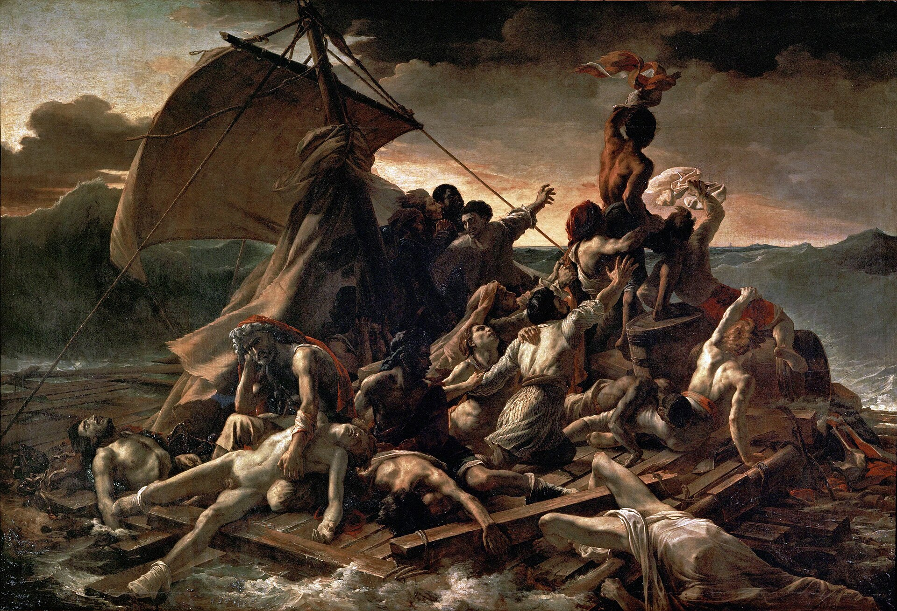
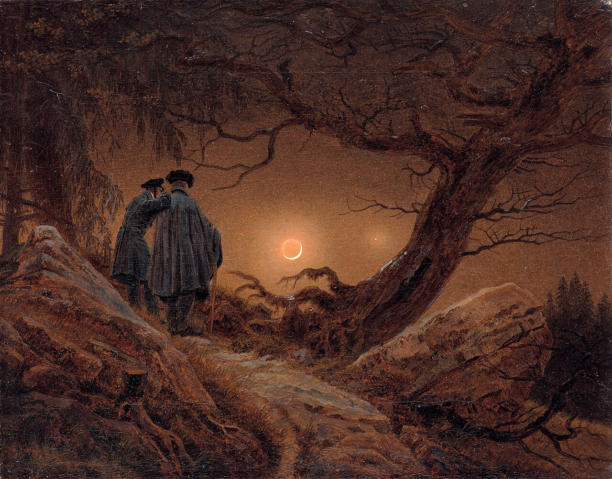
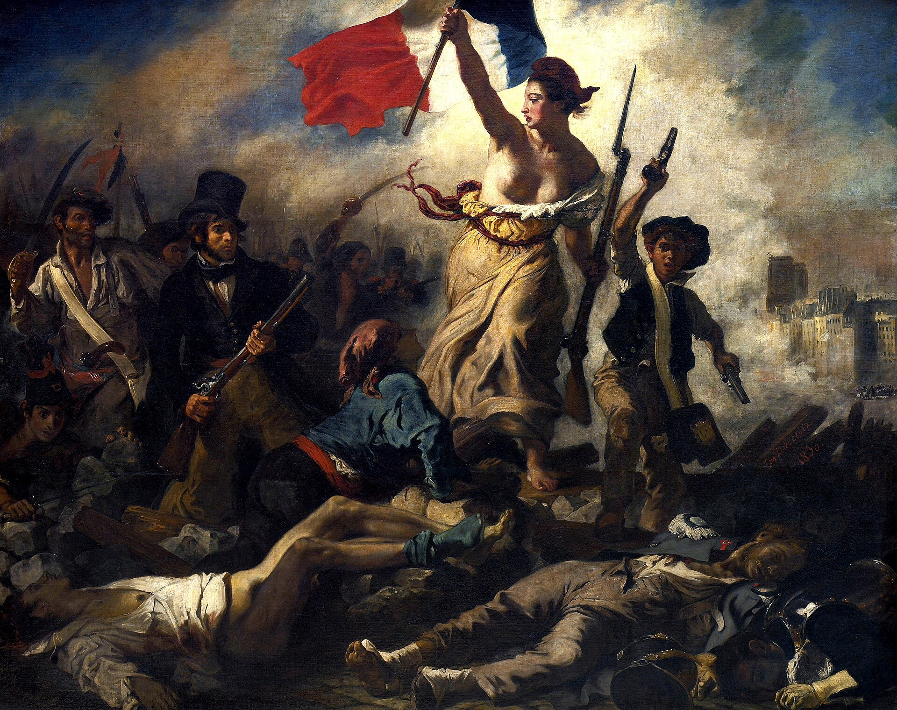

낭만주의
풍경에 담은 한 사람의 감정

안개 바다 위의 방랑자Der Wanderer über dem Nebelmeer카스파르 다비드 프리드리히 · 1818 얼굴 대신 뒷모습을 그려, 우리는 그의 눈으로 광대한 자연 앞에 선다.

눈보라: 알프스를 넘는 한니발과 그의 군대Snow Storm: Hannibal and his Army Crossing the AlpsJ. M. W. 터너 · 1812 소용돌이치는 폭풍 아래 군대는 작은 점이 된다. 자연 앞에서 느끼는 두려움과 경외, 숭고.

메두사호의 뗏목Le Radeau de la Méduse테오도르 제리코 · 1818–1819 실제 난파 사건을 거대한 화폭에 담았다. 절망 끝에서 수평선의 배를 향해 손을 흔드는 사람들.

달을 바라보는 두 남자Zwei Männer in Betrachtung des Mondes카스파르 다비드 프리드리히 · 1819–1820 달빛 아래 나란히 선 두 사람의 뒷모습. 말없는 응시가 곧 그림의 이야기다.

민중을 이끄는 자유의 여신La Liberté guidant le peuple외젠 들라크루아 · 1830 격렬한 색과 움직임으로 혁명의 열정을 그렸다. 이성보다 감정이 앞서는 낭만주의의 외침.